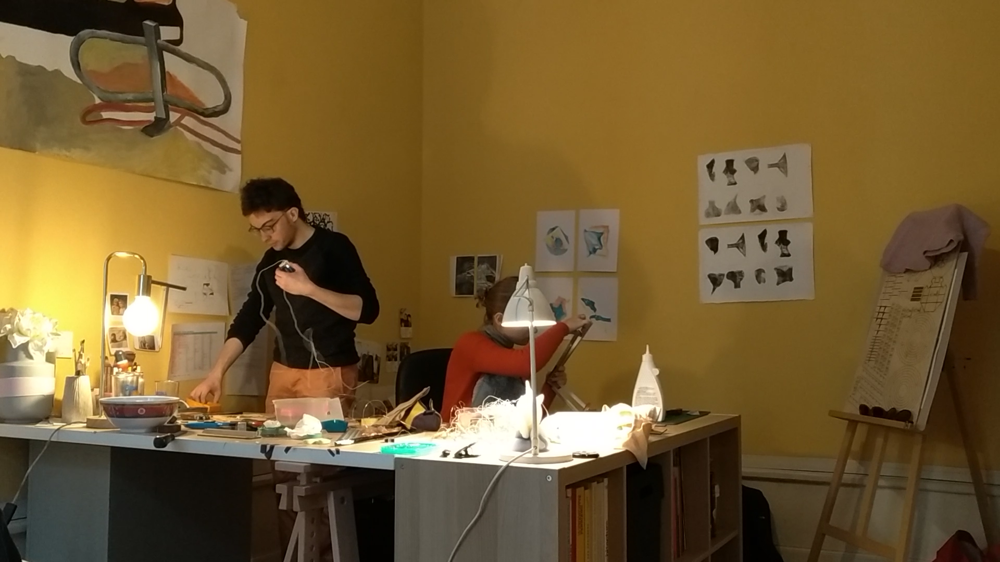
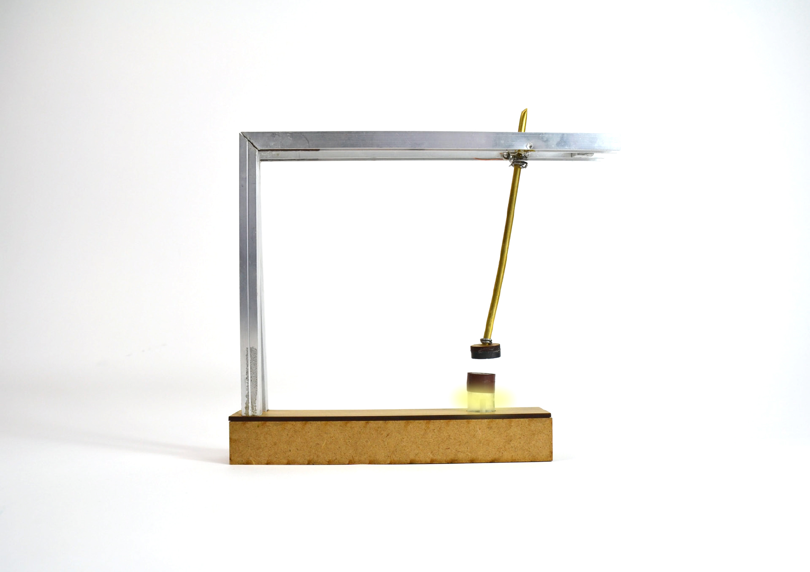
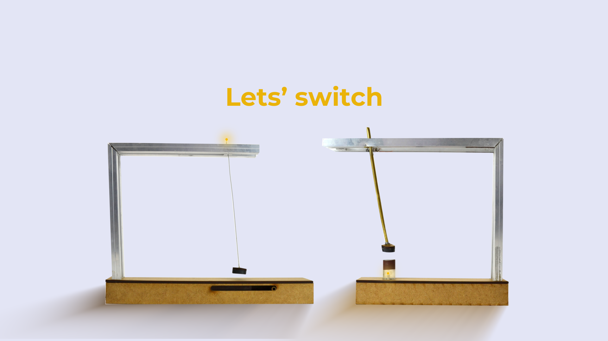

Switch
repenser un geste simple

Un projet joueur de bidouillage d’un circuit électrique avec des aimants pour recréer une lampe ;
l’attraction ou la répulsion magnétique vient ouvrir ou fermer le circuit et ainsi faire interrupteur.
Le mouvement des aimants permet ainsi de repenser le geste d’éclairer. Une démarche expérimentale,
d’apprentis électriciens qui se plient facilement à l’exercice promotionnel, dans une parodie des vidéos de communication classiques.
Voir la vidéo >

Atelier de fabrication - projet réalisé avec Margot(étudiante)
Atelier de fabrication - projet réalisé avec Margot(étudiante)

Modèle Filiforme - interrupteur et fil tendu (ou non)

Modèle Oblique - barre en laiton pour allumer
Modèle Oblique - barre en laiton pour allumer

Screenshot du clip promotionnel
Screenshot du clip promotionnel
◯
◯
◯
◯